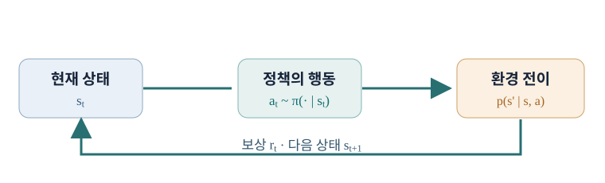

강화학습의 수학적 기초
모방학습은 전문가 행동이라는 목표값에서 출발했다. 이제 목표값 없이 환경의 결과를 평가할 수 있는 문제를 정의한다. Markov decision process(MDP)는 상태, 행동, 전이, 보상과 시간에 대한 선호를 하나의 공통 언어로 묶는다. 이후 정책경사와 Q-learning은 모두 같은 MDP를 다른 방식으로 푼다.
강화학습의 수학적 기초
강화학습은 “좋은 행동을 선택한다”는 직관만으로 알고리즘을 만들기 어렵다. 어떤 상태에서 행동을 골랐는지, 결과가 어느 확률로 나오는지, 보상을 언제 받는지를 명시해야 기대 성과를 계산할 수 있다.
이 장의 목적은 현실을 완벽하게 복제하는 수식을 만드는 것이 아니라 서로 다른 알고리즘이 공통으로 다루는 문제를 분명히 정의하는 것이다. 환경 모델을 실제로 알고 있어야 MDP로 쓸 수 있는 것은 아니다. 수학적 정의와 에이전트가 가진 지식을 구분하자.
예를 들어 로봇이 컵을 잡는 상황에서 물체 위치만 기록하면 팔의 속도나 손가락의 접촉 상태가 빠진다. 알고리즘이 틀렸는지 판단하기 전에 상태가 미래 결과를 설명할 수 있을 만큼 충분한지 확인해야 한다. MDP의 형식화는 현실을 추상화하면서도 어떤 정보를 빼도 되는가를 질문하게 만든다.
복습에서 형식화로
앞에서 전문가 시연 \((s,a^*)\)로 정책을 맞혔다. 이제는 행동의 정답이 없고, 대신 상태 \(s_t\)에서 고른 \(a_t\)가 다음 상태와 보상을 만든다고 가정한다. 보상이 즉시 주어지더라도 목표는 대개 한 단계가 아니라 여러 단계의 합이다.
모방학습의 실패 원인을 복습하는 이유도 여기에 있다. 정책은 자기가 만든 상태에 들어가므로 데이터 수집 분포를 바꾼다. MDP는 그 분포 변화를 전이 \(P(s_{t+1}\mid s_t,a_t)\)로 명시한다.
시연 정책이 조금 오른쪽으로 움직인 결과, 다음 시점에는 전문가 기록에 거의 없던 장애물 배치가 보일 수 있다. 전이 \(P(s_{t+1}\mid s_t,a_t)\)를 쓰면 행동이 다음 입력의 분포를 만든다는 말을 확률식으로 옮길 수 있다. 이후 모든 알고리즘은 이 전이에 직접 모델을 세우거나, 표본만 이용하거나, 그 영향을 가치함수에 접어 넣는다.
평가 요소와 개념 학습
구현 과제와 시험은 다른 방식으로 같은 이해를 요구한다. 예컨대 환경에서 반환한 reward와 episode 종료 신호를 잘못 처리하면 코드가 실행돼도 Bellman 목표는 틀린다. 반대로 수식만 알고 환경 API의 반환값을 모르면 경험 데이터를 올바르게 쌓을 수 없다.
이 장에서는 상태·행동·보상·전이의 기호를 실제 코드의 변수와 대응시키며 읽자. 수학의 \(s_{t+1}\)과 환경이 반환하는 다음 관측이 언제 같은지 확인하는 습관이 중요하다.
하나의 환경 전이를 코드와 식에 동시에 표시해 보자. obs가 \(s_t\), action이 \(a_t\), step 뒤의 next_obs가 \(s_{t+1}\), reward가 \(r_t\)다. 다음 관측을 현재 상태로 잘못 저장하면 Bellman 목표의 \(Q(s_{t+1},a')\) 대신 엉뚱한 값을 쓰게 된다. 표본의 시간 순서를 맞추는 일이 수식 이해의 일부다.
시험에서 MDP를 설명하는 법
MDP를 묻는 문제에는 다섯 가지 이름만 적기보다 각각의 역할을 말해야 한다. \(S\)는 가능한 상태, \(A\)는 행동, \(P\)는 상태 전이, \(r\)은 보상, \(\gamma\)는 시간에 따른 할인율이다. 초기 상태 분포 \(p_0\)와 종료 조건을 추가하면 episode가 어떻게 시작하고 끝나는지도 분명해진다.
예를 들어 로봇 보행에서 \(S\)를 카메라 영상이라고만 하면 속도와 접촉 상태가 빠질 수 있다. 그런 표현이 Markov인지 판단하는 것이 단순 정의 암기보다 중요한 시험과 실습 질문이다.
MDP를 정의할 때 \(S\)와 \(A\)를 적은 뒤 하나의 실제 전이를 만들어 보자. 예를 들어 상태가 “교차로에서 정지”, 행동이 “우회전”, 다음 상태가 “오른쪽 차선 진입”, 보상이 안전하게 진입했을 때 +1일 수 있다. 같은 행동이 다른 교통 상황에서는 다른 전이를 만들므로 \(P\)는 일반적으로 확률적이다.
출석과 연속적인 학습
강화학습 개념은 앞 정의를 뒤 수식에서 반복 사용한다. 정책경사를 보려면 trajectory 확률이, Bellman 방정식을 보려면 상태·행동·보상의 조건부 관계가 필요하다. 중간에 빠진 개념이 있으면 알고리즘마다 그 정의를 다시 확인해야 한다.
학습 기록에는 실행 결과만이 아니라 어떤 전이와 반환 정의를 사용했는지도 적자. 예컨대 종료 직전의 next state 가치를 0으로 둘지 여부는 나중의 Q-learning 구현에 직접 영향을 준다.
뒤 장에서 기호가 헷갈리면 이 장의 세 구분으로 돌아오면 된다. \(r_t\)는 지금 관측된 한 보상이고, \(G_t\)는 그 시점부터의 실제 누적 반환이며, \(V^\pi(s)\)는 상태가 \(s\)일 때 가능한 반환의 기대값이다. 하나의 표본, 표본의 합, 여러 가능한 표본의 평균을 섞어 쓰면 가치함수 유도가 불분명해진다.
질문으로 확인할 수 있는 가정
“현재 상태만으로 미래를 예측할 수 있나?”는 Markov 가정을 확인하는 질문이다. “같은 행동이 항상 같은 결과를 내나?”는 전이가 결정론적인지 묻는다. “보상이 없던 앞선 행동은 어떻게 평가하나?”는 반환과 가치함수로 이어진다.
좋은 질문은 가능한 반례를 함께 제시한다. 예컨대 공의 위치만 상태에 넣으면 같은 위치에서 오른쪽으로 움직이는 공과 왼쪽으로 움직이는 공의 다음 위치가 달라진다. 속도나 이전 위치가 더 필요하다.
반례를 만들 때는 두 궤적이 같은 현재 상태로 기록되었는데 다음 결과가 과거에 따라 달라지는지 확인하자. 앞의 공 예에서는 현재 위치가 같아도 이전 위치가 다르면 속도가 달라진다. 이 반례는 “과거가 중요하니 Markov 모델을 쓰면 안 된다”가 아니라 “현재 상태에 속도 정보를 넣어야 한다”는 수정 방향을 알려 준다.
자료를 사용할 때의 순서
운영 공지와 알고리즘 참고 문헌은 역할이 다르다. 과제 실행 환경·제출 형식은 최신 공지에서, MDP의 정의와 정책·가치함수의 표준 표기는 교재에서, 특정 알고리즘의 개선 이유와 성능은 원 논문에서 확인한다.
같은 이름의 환경이라도 버전이 바뀌면 관측·보상·종료 처리가 달라질 수 있다. 실험 숫자를 다른 자료와 비교하려면 환경 버전과 평가 방법을 먼저 맞추어야 한다.
자료마다 보상을 \(r(s)\), \(r(s,a)\), \(r(s,a,s')\)로 정의할 수 있다. 셋은 같은 숫자를 쓴다는 뜻이 아니라 어느 변수까지 보상이 의존하는지를 명시한다. 식을 비교하기 전에 지금 보고 있는 보상이 행동 전의 상태 보상인지, 전이가 끝난 뒤 얻는 보상인지 맞추어야 한다.
교재와 현대 알고리즘 사이
Sutton과 Barto의 교재는 Markov 과정과 Bellman 방정식의 기반을 제공한다. CS 224R과 CS 285의 현대 강의 자료는 신경망으로 정책이나 가치를 근사할 때의 구현 선택을 보여 준다. 두 수준을 연결하면 “이론에서는 정확한 기대값, 코드에서는 유한한 rollout 표본”이라는 차이를 이해할 수 있다.
뒤의 정책경사는 trajectory의 기대값을 표본 평균으로 바꾸고, Q-learning은 Bellman 기대식을 데이터의 목표값으로 바꾼다. 어떤 근사가 들어갔는지 표시하며 읽는 것이 핵심이다.
이론의 합 \(\sum_{s'}P(s'\mid s,a)V(s')\)는 다음 상태의 모든 가능성을 알고 계산할 때 정확하다. 현실의 한 전이 \((s,a,r,s')\)는 그 합에서 뽑힌 표본 하나다. 신경망 알고리즘의 TD 목표가 유한한 표본으로 만들어지는 이유와 그 때문에 추정 오차가 남는 이유를 이 차이에서 이해할 수 있다.
모방학습을 되짚는 이유
모방학습은 전문가 행동을 바로 알고 있을 때의 학습이다. 그 장점은 보상 설계나 탐색 없이 정책을 시작할 수 있다는 것이고, 한계는 시연이 닿지 않은 상태와 시연보다 좋은 행동을 직접 평가하기 어렵다는 것이다.
RL 형식화는 이 한계를 보상과 전이로 표현한다. 정책이 어떤 상태 분포를 만들고 그 결과로 보상을 얼마나 받는지를 목적에 넣으면, 시연의 행동 일치율과 실제 성공률이 달라지는 이유를 수학적으로 말할 수 있다.
모방 정책이 전문가와 95%의 행동 일치율을 보여도 성공률이 낮다면 두 가지를 물어야 한다. 틀린 5%가 접촉 직전 같은 중요한 시점에 몰렸는가? 첫 실수 뒤 정책이 훈련 데이터에 없는 상태로 들어갔는가? MDP는 두 질문을 보상 \(r\)과 방문 분포 \(d_\pi\)로 각각 표현하게 해 준다.
결정 문제의 최소 구성
정책 \(\pi_\theta(a\mid s)\)는 현재 상태에서 행동을 고른다. 그러나 “좋은 행동”은 상태와 행동만으로 정해지지 않는다. 행동이 이후 상태를 어떻게 바꾸는지와 그 상태의 보상이 있어야 평가할 수 있다.
같은 “앞으로 한 걸음”도 낭떠러지 앞에서는 나쁘고 안전한 통로에서는 좋다. 정책의 입력 상태에 위치와 주변 지형이 들어가야 하며, 목표는 한 행동의 모양이 아니라 전체 행동열이 만들어 내는 결과다.
행동 하나의 좋고 나쁨은 다음 상태의 가치에 달려 있다. 현재 보상이 \(r(s,a)=0\)인 두 행동 중 하나가 위험한 상태로, 다른 하나가 목표 가까이로 간다면 즉시 보상만으로는 둘을 구별하지 못한다. 전이와 미래 보상을 포함한 \(Q^\pi(s,a)\)를 나중에 도입하는 이유다.
행동 복제의 기준선
BC는 전문가 데이터 \(\mathcal D\)에서 \(-\mathbb E_{(s,a)\sim\mathcal D}\log\pi_\theta(a\mid s)\)를 최소화한다. 이 식은 데이터셋의 행동을 잘 예측하는 정책을 만든다. 보상 \(r\)이나 전이 \(P\)를 직접 사용하지 않으므로, 같은 성공을 더 효율적으로 달성하는 새 경로를 평가할 신호는 없다.
반면 RL에서는 전문가가 없어도 환경의 보상으로 정책을 비교할 수 있다. 다만 좋은 행동을 찾는 탐색 비용이 든다. 두 방식은 데이터의 종류가 다른 것이지 신경망 구조가 반드시 달라야 하는 것은 아니다.
같은 네트워크를 BC와 RL 양쪽에서 쓸 수 있어도 손실 함수의 질문은 다르다. BC는 “이 상태에서 전문가 행동이 얼마나 그럴듯한가”를 묻고, RL은 “이 정책을 실행하면 기대 반환이 얼마인가”를 묻는다. 행동의 모양이 달라져도 결과가 좋다면 RL 목표에는 유리할 수 있지만 BC 손실에는 불리할 수 있다.
모방학습의 세 실패
실행 때 다른 상태에 들어가는 분포 이동, 같은 상태에서 여러 유효 행동이 있는 다봉성, 전문가가 더 많은 정보를 본 관측 불일치는 서로 다른 실패다. 하나의 높은 훈련 정확도로 세 문제를 동시에 해결했다고 볼 수 없다.
MDP의 상태를 정할 때는 특히 관측 불일치를 다시 생각해야 한다. 전문가가 가진 과거 정보와 정책이 받는 센서가 다르면, 선택한 \(s_t\)가 미래의 보상과 전이를 설명하기에 충분하지 않을 수 있다.
세 실패를 MDP 관점에 붙이면 분포 이동은 정책이 바꾼 상태 방문 확률, 다봉성은 한 상태에서 여러 유효 행동, 관측 불일치는 상태 표현의 불충분함이다. 같은 실패율 수치로는 원인이 구별되지 않는다. 적절한 상태와 행동 공간을 정하는 과정 자체가 알고리즘 설계와 맞물려 있다.
DAgger의 상태 분포 수정
DAgger는 현재 정책이 방문한 상태를 모으고 그곳에서 전문가 라벨을 받아 데이터셋을 늘린다. 이 과정은 정책이 만드는 분포 \(d_{\pi}\)에 학습을 맞춘다. 단순히 시연 횟수를 늘리는 것과 달리, 실제 정책이 어려워하는 상태에 데이터가 집중된다.
그러나 전문가가 개입할 수 있어야 하고, 그 판단을 받는 비용이 든다. 뒤의 RL은 전문가 라벨 대신 보상으로 결과를 평가한다는 점에서 출발 조건이 다르다.
DAgger는 분포를 고치는 방법이지만 전문가의 정답이 그 상태에서 정의되어 있어야 한다. 정책이 위험 상태에 갔을 때 전문가가 안전하게 복구할 수 없는 환경이라면 라벨을 받는 절차 자체가 성립하기 어렵다. 시뮬레이터에서 교정하거나, 안전 제약을 둔 다른 데이터 수집이 필요할 수 있다.
사람의 개입과 보상의 차이
사람이 실수를 보고 제어권을 가져와 교정하는 방식은 실행 정책의 취약 상태를 잘 포착한다. 여기서 사람의 신호는 “지금은 이렇게 움직여야 한다”는 행동 라벨이다. 성공·실패만 알려 주는 보상보다 직접적이지만, 매 상황에서 사람이 빠르게 반응할 수 있어야 한다.
고속 로봇에서는 개입 지연이 문제고, 사람의 피로가 시연 품질을 바꿀 수 있다. 이런 한계가 보상 기반 상호작용, 시뮬레이션과 오프라인 데이터의 활용을 고민하게 만든다.
사람이 조향을 직접 고쳐 주면 행동 라벨을 얻는다. 사람이 두 주행 영상 중 하나가 더 안전하다고 고르면 선호 신호를 얻는다. 충돌 센서가 작동하면 사건 기반 보상을 얻는다. 모두 피드백이지만 데이터 형식이 다르므로, 전문가 행동을 따라 하는 학습과 결과를 평가하는 학습을 섞어 부르지 말자.
RL 문제로 넘어가는 연결
이제 행동 라벨 \(\pi^*(s)\)를 잠시 내려놓고, 환경의 전이와 보상만으로 정책을 평가한다. 정책이 상태 분포를 바꾸기 때문에 학습의 대상은 각 상태의 행동 오차가 아니라 정책이 만드는 전체 궤적의 성과다.
가장 단순한 목적은 \(J(\pi)=\mathbb E_{\tau\sim\pi}[\sum_t r_t]\)다. 기대값은 같은 정책에서도 결과가 달라질 수 있음을 나타낸다. 앞으로의 MDP 정의가 이 기대값의 확률 구조를 명시한다.
BC에서 정책의 좋고 나쁨은 보통 전문가 행동과의 거리로 측정한다. RL에서는 정책이 만든 상태 분포 자체가 목적함수에 들어간다. 예를 들어 더 많은 보상을 주는 방으로 이동한 정책은 이후에도 그 방에서 행동할 기회를 얻는다. 한 시점의 행동 확률을 조금 바꿨을 뿐인데 미래의 경험 전체가 달라지는 이유다.
누적 보상의 의미
강화학습은 매 순간의 보상을 많이 받도록 하는 것처럼 보이지만, 실제 목적은 정책이 만든 여러 시간의 보상을 합친 반환을 높이는 것이다. \(G_t=\sum_{k=0}^{T-t-1}\gamma^k r_{t+k}\)로 쓰면 현재 보상뿐 아니라 뒤의 결과가 들어간다.
예를 들어 게임에서 당장 점수를 얻는 길이 곧 패배로 이어질 수 있다. 누적 보상이 목표라면 그 길을 피해야 한다. \(\gamma\)는 뒤 보상을 얼마나 반영할지 정하지만, 보상의 단위와 episode 길이도 결과에 영향을 준다.
수치 예를 들어 첫 단계에 3점, 다음 단계에 4점, 마지막에 5점을 받고 \(\gamma=0.5\)라면 \(G_0=3+0.5\cdot4+0.5^2\cdot5=6.25\)다. 같은 세 보상도 \(\gamma=1\)이면 12점이 된다. 할인율을 바꾸면 단순히 수식 모양만 바뀌는 것이 아니라 어느 시간의 결과를 정책이 더 중시하는지가 달라진다.
보상을 매 단계 2배로 하면 최적 정책이 바뀔까?
모든 보상을 같은 양의 양수로 곱하고 다른 제약이 없다면 각 정책의 반환도 같은 비율로 바뀌므로 최적 정책의 순서는 유지된다. 하지만 일부 보상 항만 키우거나 학습 알고리즘의 clip·정규화 설정을 그대로 두면 실제 학습 행동은 달라질 수 있다.
RL 문제를 확률로 쓰기
초기 상태 \(s_0\)가 \(p_0\)에서 나오고, 정책이 \(a_t\sim\pi(a_t\mid s_t)\)를 선택하며, 환경이 \(s_{t+1}\sim P(s_{t+1}\mid s_t,a_t)\)를 만든다고 하자. 이 세 단계가 반복되면 전체 궤적의 확률이 정해진다.
보상도 확률적이면 \(p(r_t\mid s_t,a_t)\) 항을 곱해 넣을 수 있다. 목표는 정책이 만드는 궤적에서 반환의 기대값 \(J(\pi)=E_{\tau\sim p_\pi}[G_0]\)을 높이는 것이다. 뒤의 정책경사는 이 식을 \(\theta\)에 대해 미분한다.
곱의 각 항은 한 단계의 조건부 확률에서 나온다. 먼저 \(p_0(s_0)\)로 시작 상태를 뽑고, 그 상태에서 \(\pi(a_0\mid s_0)\)로 행동을 뽑고, \(P(s_1\mid s_0,a_0)\)로 다음 상태를 뽑는다. 같은 과정을 \(T\)번 반복하면 chain rule에 따라 전체 궤적의 확률이 곱으로 표현된다. 전이가 Markov이고 정책이 현재 상태에만 의존한다는 조건을 사용했기에 더 오래된 과거는 각 항에 나타나지 않는다.
결정론적 정책에서는 행동 확률이 사라질까?
이산 행동에서는 선택된 행동에 확률 1, 나머지에 0을 주는 특수한 정책으로 볼 수 있다. 연속 행동에서는 Dirac delta로 나타내거나 행동을 상태의 함수로 대입해 궤적의 확률을 쓴다. 정책경사의 로그확률 식을 그대로 쓰려면 보통 확률적 정책이 편리하다.
MDP가 환경과 과업을 함께 담는 이유
물리적인 전이만으로는 무엇을 잘해야 하는지 정해지지 않는다. 같은 로봇과 방에서도 “빨리 이동하라”와 “에너지를 적게 쓰라”는 과업은 보상이 다르다. MDP는 전이 \(P\)와 보상 \(r\)을 함께 포함하여 환경의 움직임과 목적을 한 문제로 정의한다.
환경 모델을 모른다고 해서 MDP가 사라지는 것은 아니다. 실제 로봇의 마찰과 접촉 확률을 계산할 수 없어도 전이를 경험할 수 있다. 모델 프리 알고리즘은 그 경험으로 정책이나 가치를 학습한다.
같은 방에서 같은 로봇을 쓰더라도 보상이 이동 속도라면 빨리 달리는 정책, 배터리 사용량이라면 천천히 움직이는 정책이 유리할 수 있다. 전이 \(P\)는 두 과제에서 같고 보상 \(r\)만 다르다. 따라서 “환경을 배웠다”와 “과제에서 잘한다”를 구분해야 하며, 보상은 실제 의도를 충분히 담는지 별도로 검토해야 한다.
확률 과정의 기초
확률 과정은 시간에 따라 달라지는 확률변수들의 모음 \(\{S_t\}_{t\in\mathcal T}\)이다. 주사위를 한 번 던져 나온 값 하나가 아니라, 여러 시점의 상태가 이어진 무작위 경로를 다룬다. 같은 시작 상태라도 전이의 우연성 때문에 다음 경로가 달라질 수 있다.
예를 들어 공부하는 학생이 과제를 시작할지 영상을 볼지는 확률적일 수 있다. 이 단계에는 아직 에이전트의 의도적인 행동이나 보상이 없어도 된다. 상태와 다음 상태의 확률 관계만 생각하는 것이 Markov 과정의 출발점이다.
확률변수 \(S_t\)는 실행 전에 어떤 상태가 될지 모르는 양이고, 실제로 관측한 \(s_t\)는 그 한 번의 실현값이다. 같은 시작 상태에서 100번 실행해 서로 다른 경로를 얻어도 과정의 전이 규칙이 같을 수 있다. 표본 궤적 하나만 보고 전이 확률을 정확히 안다고 생각하면 안 되는 이유다.
Markov 성질의 정확한 뜻
Markov 성질은 현재 상태를 알고 나면 과거 상태가 다음 상태를 예측하는 데 추가 정보를 주지 않는다는 조건이다.
과거가 실제로 없었다는 말은 아니다. 필요한 과거 정보가 현재 상태 안에 요약되어 있어야 한다. 공의 현재 위치만 기록하면 속도를 알 수 없어 다음 위치 예측이 어려울 수 있다. 위치와 속도를 함께 상태로 두면 Markov에 가까워진다.
과거를 모두 버려도 된다는 뜻인가?
현재 상태가 미래 예측에 충분할 때만 그렇다. 불충분하면 이전 관측을 상태에 포함하거나, 숨겨진 상태에 대한 믿음 분포를 유지해야 한다. 상태 표현을 어떻게 정했느냐에 따라 Markov 성질의 성립 여부가 달라진다.
공의 위치가 \(x_t=0\)인 두 장면을 생각하자. 한 장면은 오른쪽으로 움직이며 속도가 \(+1\), 다른 장면은 왼쪽으로 움직이며 속도가 \(-1\)이다. 위치만 상태라면 다음 위치가 달라지므로 현재 값만으로 미래를 예측하기 어렵다. 상태를 \((x_t,v_t)\)로 넓히면 두 장면이 다른 상태가 된다. Markov 성질은 세계의 성질만이 아니라 무엇을 상태로 정했는가에도 달려 있다.
Markov chain의 두 요소
Markov 과정 또는 chain은 상태 집합 \(S\)와 전이 확률 \(P(s'\mid s)\)로 나타낼 수 있다. \(P(s'\mid s)\)는 현재 \(s\)에서 다음에 \(s'\)가 될 확률이며, 각 \(s\)에 대해 \(\sum_{s'}P(s'\mid s)=1\)이어야 한다.
상태와 전이만 있으므로 아직 선택할 행동이 없다. 어떤 상태가 “좋다”는 보상도 없다. 이 단계에서 계산할 수 있는 것은 특정 상태에 도달할 확률이나 오래 머무를 확률 같은 확률적 성질이다.
두 상태 \(A,B\)의 예에서 \(P(A\mid A)=0.8\), \(P(B\mid A)=0.2\), \(P(A\mid B)=0.4\), \(P(B\mid B)=0.6\)이라고 하자. 현재 \(A\)라면 두 단계 뒤 다시 \(A\)일 확률은 \(0.8\cdot0.8+0.2\cdot0.4=0.72\)다. 중간 상태 \(A\)와 \(B\)라는 두 경로의 확률을 더한 것이다. 이 계산이 전이 행렬 제곱 \(P^2\)의 한 원소와 같다.
공부와 과제의 Markov chain
공부, 숙제, 제출, 영상 시청을 상태로 생각하자. 화살표에 적힌 수는 현재 상태에서 다음 상태로 옮길 확률이다. 공부에서 숙제로 갈 수도, 영상을 보기 시작할 수도 있다. 한 번 영상 상태에 들어간 뒤 다시 공부로 돌아올 수도 있으므로 경로는 매번 다르다.
그림의 세 sample episode는 같은 전이 규칙에서 가능한 서로 다른 실현이다. 전이 확률은 한 경로의 목록이 아니라 많은 경로의 상대적 빈도를 정의한다. 제출이 흡수 상태라면 그 뒤에는 계속 제출 상태에 머물거나 episode를 끝낼 수 있다.
상태가 “공부”일 때 바로 “제출”이 보이지 않아도, 여러 단계 후 제출에 닿는 경로는 존재할 수 있다. 전이 그림의 한 화살표가 뜻하는 것은 다음 한 단계의 확률이다. 제출 도달 확률이나 기대 소요 시간은 가능한 여러 경로를 합쳐야 구한다. 그림에서 한 번 그려진 episode를 가장 가능성 높은 경로로 오해하지 말자.
Markov Reward Process
Markov reward process(MRP)는 Markov chain에 보상 함수 \(r(s)\)와 할인율 \(\gamma\)를 더한다. 이제 상태의 좋고 나쁨을 시간에 걸쳐 계산할 수 있다. 즉 선택할 행동은 아직 없지만, 현재 상태에서 시작할 때 기대되는 미래 보상을 정의할 수 있다.
\(0\le\gamma<1\)이면 보상이 유계인 계속 과업에서 합이 잘 정의된다. 유한 episode는 \(\gamma=1\)을 써도 반환이 유한할 수 있다. \(\gamma\)는 미래 보상 선호뿐 아니라 무한 합을 안정적으로 다루는 역할도 한다.
가치함수의 재귀식을 직접 만들 수 있다. 반환을 첫 보상과 나머지로 분리하면 \(G_t=r(S_t)+\gamma G_{t+1}\)이다. \(S_t=s\)를 조건으로 기대값을 취하고 다음 상태 \(s'\)에 대한 확률을 풀어 쓰면
이것이 MRP의 Bellman equation이다. 지금 받는 보상과 다음 상태의 기대 가치를 더한 식이며, 다음 상태의 가치를 안다면 현재 상태의 가치를 계산할 수 있다는 직관과 연결된다.
상태가 유한하면 각 \(V(s)\)를 벡터 \(v\), 즉시 보상을 벡터 \(r\), 전이확률을 행렬 \(P\)에 모을 수 있다. 위 식은 \(v=r+\gamma Pv\)이므로
\(P\)의 각 행 합은 1이고 \(\gamma<1\)이면 \(\gamma P\)의 거듭제곱이 작아져 마지막 등식의 기하급수가 수렴한다. \(P^k r\)는 \(k\)단계 뒤의 보상 기대값이므로 행렬식은 처음의 반환 정의와 정확히 같은 내용을 담는다. 예를 들어 \(s_1\)에서 항상 \(s_2\)로 가고, \(s_2\)는 매 단계 보상 1을 주며 그곳에 머문다면 \(\gamma=0.9\)에서 \(V(s_2)=1+0.9V(s_2)=10\), \(V(s_1)=0+0.9V(s_2)=9\)다. 종료 상태에서 한 번만 1을 주는 과업과는 다른 설정이다.
즉시 비용과 최종 보상
공부와 과제 진행에는 작은 시간 비용, 제출에는 큰 보상이 있다고 하자. 보상을 받기 위해서는 중간의 음의 보상을 감수해야 한다. 예를 들어 지금 공부에 \(-1\), 다음 과제에 \(-1\), 그 뒤 제출에 \(100\)을 받고 \(\gamma=0.9\)라면 반환은 \(-1+0.9(-1)+0.9^2(100)=79.1\)이다.
반면 영상 시청에서 계속 \(-0.1\)만 받고 끝나지 않는다면 할인 반환은 \(-0.1/(1-0.9)=-1\)이다. 이 간단한 계산은 즉시 보상이 더 큰 행동이 장기적으로 더 좋다는 뜻이 아님을 보여 준다. 다만 그림 자체의 확률을 사용한 기대값은 가능한 모든 경로를 전이 확률로 가중해 계산해야 한다.
앞 계산에서 제출 보상 100점은 두 단계 뒤에 오므로 \(0.9^2\)를 곱했다. 만약 제출로 갈 확률이 0.5이고 실패하면 보상을 받지 못한다면, 100점 항의 기대 기여는 \(0.5\cdot0.9^2\cdot100=40.5\)다. 보상을 받은 한 경로의 반환과 그 경로가 일어날 확률까지 반영한 기대 가치를 구분해야 한다.
선택을 더한 MDP
MDP는 \(S,A,P,r,\gamma\)의 묶음이다. 행동 \(a\)를 고른 뒤 전이 \(P(s'\mid s,a)\)가 다음 상태를 만들고 보상 \(r(s,a)\) 또는 더 일반적으로 \(r(s,a,s')\)가 주어진다. Markov chain에서는 전이가 상태만의 함수였지만 MDP에서는 행동이 전이를 바꾼다.
어떤 책은 보상을 확률변수로 두어 \(P(s',r\mid s,a)\)로 합쳐 쓴다. 표기가 달라도 현재 상태와 행동을 조건으로 다음 상태와 보상의 분포가 정해진다는 뜻은 같다. 목표는 선택 가능한 정책 가운데 높은 기대 반환을 얻는 것이다.
아주 작은 MDP에서 같은 상태 \(s\)에 “공부”와 “영상 보기” 두 행동이 있다고 하자. 공부를 고르면 제출 상태로 갈 확률이 0.8, 영상을 고르면 0.1이라면 두 행동은 현재 상태가 같아도 미래 분포를 다르게 만든다. 행동이 없는 Markov chain은 이 차이를 표현할 수 없고, 행동별 전이 \(P(s'\mid s,a)\)가 필요한 이유다.

공부 예시에 행동을 넣기
이제 “공부하기”, “영상 보기”, “과제 시작”, “제출”이 상태가 아니라 행동이 된다. 공부 중에 영상을 고르면 영상 상태로 갈 확률이 높아지고, 과제를 시작하면 숙제 상태로 갈 수 있다. 정책은 같은 상태에서 어느 행동을 얼마나 자주 고를지 정한다.
상태와 행동을 혼동하면 전이 그림을 잘못 해석한다. “숙제 중”은 현재 상황이고 “제출한다”는 선택이다. 보상은 선택 뒤의 결과를 평가한다. 이 구분을 고정하면 로봇·게임·대화 예시도 같은 표기로 옮길 수 있다.
상태와 행동을 분리하는 실용적 기준은 “지금 관측된 조건인가, 에이전트가 선택할 수 있는가”다. 이미 숙제 중이라는 사실은 상태이고, 지금 제출 버튼을 누르는 것은 행동이다. 단, 환경 설계에 따라 같은 단어도 다른 역할을 맡을 수 있으므로 이름 자체보다 선택 가능성과 시간 순서를 따져야 한다.
환경을 정의하는 식과 학습 목표
MDP는 정책이 주어졌을 때 어떤 궤적이 나올지 확률적으로 정의한다. 학습자는 전이와 보상의 결과를 관측해 \(J(\pi)=E_{\tau\sim p_\pi}[\sum_t\gamma^t r_t]\)를 크게 만드는 정책을 찾는다.
환경의 목적은 보상으로 표현되지만 보상 설계가 부정확하면 높은 \(J\)가 실제 성공을 뜻하지 않을 수 있다. 예를 들어 과제 제출 버튼만 누르면 큰 보상을 준다면 내용을 작성하지 않고 제출하는 정책도 수식상 최적일 수 있다. 목적의 측정 방법을 점검해야 한다.
보상 설계의 허점을 작은 예로 확인할 수 있다. 과제 제출 버튼에만 +10을 주고 내용 품질은 평가하지 않으면, 에이전트는 빈 문서를 즉시 제출해 +10을 얻을 수 있다. 수학적 최적화는 정의된 숫자에 충실하지만 사람이 원한 “잘 작성한 과제”와는 어긋난다. 최종 성공 지표를 보상과 독립적으로 확인해야 하는 이유다.
정책이 정의하는 행동
Markov 정책은 현재 상태만으로 행동 확률을 정한다. \(\pi(a\mid s)\ge0\)이고 이산 행동에서는 \(\sum_a\pi(a\mid s)=1\)이다. 주어진 MDP와 정책이 있으면 상태 전이는 정책에 대해 평균 낸 \(P_\pi(s'\mid s)=\sum_a\pi(a\mid s)P(s'\mid s,a)\)가 된다.
즉 하나의 정책을 고르면 MDP 위의 상태 흐름이 하나의 Markov chain으로 바뀐다. 이 관계가 정책 평가의 출발점이다. 나중에 정책을 바꾸면 방문 상태의 분포도 바뀌므로, 오래된 경험 데이터를 사용할 때 주의가 필요하다.
예를 들어 \(\pi(a_1\mid s)=0.25\), \(\pi(a_2\mid s)=0.75\)이고 다음 상태 \(s'\)로 갈 확률이 각각 0.8, 0.4라면 \(P_\pi(s'\mid s)=0.25\cdot0.8+0.75\cdot0.4=0.5\)다. 정책이 바뀌어 \(a_1\)을 더 자주 고르면 전이 규칙을 가진 환경 자체는 그대로여도 정책 아래에서 관측되는 상태 흐름은 달라진다.
유한 상태에서 정책을 고정하면 보상이 \(r(s,a)\) 형태일 때 행동을 평균 낸 즉시 보상 \(r_\pi(s)=\sum_a\pi(a\mid s)r(s,a)\)와 전이 행렬 \(P_\pi\)를 만들 수 있다. 보상이 다음 상태에도 의존하면 그 전이까지 평균에 넣으면 된다. 할인 가치의 Bellman 식은 벡터로 \(V^\pi=r_\pi+\gamma P_\pi V^\pi\)다. \(0\le\gamma<1\)이면 이를 정리해 \(V^\pi=(I-\gamma P_\pi)^{-1}r_\pi\)로 풀 수 있다. 표본 기반 알고리즘이 나중에 근사하는 대상은 이처럼 정책 아래의 미래 보상 기대값이다. 상태가 크거나 전이 행렬을 모르면 역행렬을 실제로 계산하지 않고 경험에서 가치를 학습한다.
정책을 고정하면 왜 MDP가 Markov chain이 되나?
상태 \(s\)에서 다음 상태로 가는 확률은 정책이 각 행동을 고를 확률과 행동별 전이 확률을 곱해 모두 더한 \(P_\pi(s'\mid s)\)다. 행동 선택을 이 평균 안에 포함했으므로, 상태만으로 다음 상태의 확률이 정해진다. 정책을 다시 바꾸면 다른 chain이 된다.
초기 상태 분포까지 포함하기
MDP의 정의에 \(p_0(s_0)\)를 넣으면 episode가 어디서 시작할지 명시된다. 출발 위치가 늘 같을 때와 무작위일 때는 같은 정책의 평균 성과가 달라진다. 환경 전이와 보상이 같아도 초기 분포가 바뀌면 학습 목표 \(E_{s_0\sim p_0}[V^\pi(s_0)]\)가 달라진다.
실험에서 초기 상태를 무작위화하면 더 넓은 상태를 연습할 수 있다. 반면 평가할 때만 쉬운 시작 상태를 쓰면 성능을 과대평가한다. 학습과 평가의 초기 분포를 따로 기록해야 한다.
초기 상태가 쉬운 \(s_A\)와 어려운 \(s_B\)로 절반씩 나오고 정책의 성공 확률이 각각 1과 0이라면 평균 성공률은 0.5다. 같은 정책을 \(s_A\)에서만 평가하면 1로 보인다. 정책이나 환경 전이를 고치지 않아도 시작 분포만으로 수치가 크게 바뀐다. 따라서 논문의 성과를 비교할 때 초기화 규칙을 확인해야 한다.
시작 상태가 여러 개일 때
그림의 “여기서 시작” 표시는 과제를 시작하는 위치가 하나가 아님을 보여 준다. 같은 정책도 바로 숙제 상태에서 시작하면 제출까지 가는 길이 짧고, 영상 상태에서 시작하면 공부로 돌아오는 데 시간이 걸릴 수 있다.
초기 상태 분포는 단순한 구현 세부 사항이 아니다. 어떤 상황에서 좋은 정책을 원하느냐를 정의한다. \(p_0\)가 거의 방문하지 않는 어려운 상태에서의 정책 능력은 평균 반환에 작게 반영될 수 있으므로, 별도의 스트레스 평가가 필요하다.
평균 반환이 높은 정책이 어려운 출발점에서 약할 수 있다. 예컨대 시작의 95%가 쉬운 상태라면 드문 5%의 실패는 평균에서 작게 보인다. 서비스나 로봇의 실제 안전이 그 5%에 달려 있다면 시작 조건별 성공률을 별도로 보고해야 한다. 평균 성능과 최악 조건 성능은 다른 질문이다.
상태와 행동은 과업마다 다르다
보드게임의 상태는 바둑판의 돌 배치이고 행동은 다음 수의 위치다. 로봇의 상태는 관절 각도·속도·카메라·촉각 등이고 행동은 관절 토크나 그리퍼 명령이다. 같은 수학적 MDP라도 변수의 의미와 크기가 크게 다르다.
카메라 이미지가 상태에 포함된다고 해서 항상 전체 상태를 알 수 있는 것은 아니다. 가려진 물체, 보이지 않는 접촉력, 영상 한 장으로 알기 어려운 속도가 남는다. 상태 표현을 정할 때 “다음 상태와 보상을 예측하는 데 무엇이 빠졌는가”를 묻자.
바둑판은 돌의 배치만으로 현재 합법 수를 충분히 알 수 없는 규칙이 있을 수 있고, 로봇의 영상 한 장은 속도를 직접 보여 주지 않는다. 상태를 간단히 만들수록 학습은 쉬워질 수 있지만 중요한 정보가 빠질 위험도 커진다. 상태 표현은 입력의 크기만이 아니라 미래 전이와 보상을 예측하는 데 충분한가로 판단한다.
환경을 완전히 정의해도 모를 수 있다
수학적으로 MDP를 쓴다는 것은 전이와 보상이 존재하고 일정한 규칙을 따른다는 모델링이다. 에이전트가 그 확률표나 물리 방정식을 알고 있다는 뜻은 아니다. 실제 로봇의 접촉을 정확히 계산하지 못해도 행동을 실행해 표본 \((s_t,a_t,r_t,s_{t+1})\)을 관측할 수 있다.
모델 기반 방법은 이 전이를 학습하거나 시뮬레이터를 이용해 계획한다. 모델 프리 방법은 전이를 직접 예측하기보다 표본에서 정책 또는 가치를 개선한다. 두 접근은 환경이 알려진 정도와 상호작용 비용에서 절충한다.
전이 확률표를 모르는 카드 게임도 규칙을 완전히 모른다는 이유로 MDP가 아닌 것은 아니다. 여러 번 플레이해 행동과 다음 결과의 표본을 모을 수 있다. 모델 기반 방법은 그 표본으로 결과를 예측하는 모델을 만들고, 모델 프리 방법은 결과 모델을 명시적으로 만들지 않고 가치나 정책을 갱신한다. 어느 쪽도 표본 부족의 문제에서 자유롭지는 않다.
실제 던지기의 MDP
바나나를 바구니에 넣는 로봇을 생각하자. 상태는 로봇과 물체의 위치·속도, 행동은 관절 제어, 다음 상태는 실제 물리, 보상은 바구니에 들어갔는지의 신호일 수 있다. 성공 보상이 마지막에만 주어지면 어느 관절 동작이 성공에 기여했는지 바로 알기 어렵다.
물리 전이가 알려지지 않은 상태에서 여러 번 던져 얻은 표본으로 정책을 개선할 수 있다. 그러나 실패한 던지기의 비용과 안전 문제가 있으므로 실제 로봇에서는 시뮬레이션, 시연, 안전 제약과 병행하는 경우가 많다.
던지기 직전의 각도와 속도가 조금만 달라도 착지 위치는 달라진다. 성공 보상이 마지막에만 1이면 실패 궤적 대부분의 보상은 0이다. 거리 기반 중간 보상을 넣으면 신호가 풍부해지지만, 바구니 옆을 오래 맴도는 행동이 높은 점수를 받을 수도 있다. 보상 밀도와 목표 일치 사이의 절충을 이해하기 좋은 사례다.
환경 API와 수학 기호의 대응
환경을 초기화하면 \(s_0\) 또는 초기 관측을 받고, 한 단계 진행하면 \(s_{t+1}\), \(r_t\), 종료 신호와 추가 정보를 받는다. 에이전트는 명령을 보낸 뒤 내부 물리 계산의 모든 세부를 몰라도 다음 전이 표본을 얻을 수 있다.
코드에서 중요한 것은 반환 형식과 종료 처리다. Gym 계열 API의 버전에 따라 초기화가 관측과 정보의 쌍을 주고, 진행 결과가 종료와 시간 제한을 따로 줄 수 있다. 시간 제한으로 잘린 episode를 진짜 종료와 혼동하면 다음 상태 가치의 부트스트랩 처리가 틀릴 수 있다.
환경의 전이를 모르는데 Bellman 방정식을 사용할 수 있나?
가능하다. Bellman 방정식은 기대값의 관계를 정의하고, 구현에서는 환경에서 얻은 표본으로 그 기대값을 근사한다. 전이 확률표를 직접 알아야 하는 동적 계획법과 표본 기반 TD 학습을 구분하면 된다.
구체적으로 step(a_t)가 (o_{t+1}, r_t, terminated, truncated, info)를 반환한다고 생각하자. terminated는 과제 자체의 종료이고 truncated는 시간 제한 같은 외부 중단일 수 있다. 가치 학습에서 진짜 종료 뒤의 미래 가치는 0으로 두지만, 시간만 잘린 경우에는 \(V(o_{t+1})\)를 이어서 추정해야 할 수 있다. 이 차이가 잘못 처리되면 모든 제한 시점의 가치를 과소평가할 수 있다.
완전 관측의 한계
MDP의 상태는 미래 예측에 필요한 정보를 충분히 담아야 한다. 실제 세계에서는 카메라가 가린 물체, 센서가 측정하지 않은 힘, 사람의 숨은 의도 때문에 관측만으로 전체 상태를 알기 어렵다. 이런 상황은 부분 관측 문제로 보는 편이 정확하다.
정책은 관측 이력 \(o_{0:t}\)을 사용하거나, 숨은 상태에 대한 믿음 분포 \(b_t(s)=P(s_t=s\mid o_{0:t},a_{0:t-1})\)를 유지할 수 있다. 나중에 POMDP를 배우면 이 개념이 정식화된다. 현재는 관측 \(o_t\)와 충분한 상태 \(s_t\)를 무심코 같게 두지 않는 것이 중요하다.
컵이 불투명한 상자 뒤에 있을 때 카메라 영상 하나만으로 정확한 위치를 알 수 없더라도, 직전에 컵이 움직인 방향을 기억하면 추정할 수 있다. 이처럼 과거 이력을 요약한 내부 상태를 두는 정책은 한 장면만 쓰는 정책보다 정보가 많다. 단, 기억을 추가해도 센서가 전혀 제공하지 않는 정보는 추정의 불확실성이 남는다.
믿음 상태의 갱신은 두 단계다. 먼저 이전 믿음 \(b_t(s)\)와 행동 \(a_t\)로 다음 숨은 상태를 예측해 \(\widetilde b_{t+1}(s')=\sum_sP(s'\mid s,a_t)b_t(s)\)를 만든다. 다음 관측 \(o_{t+1}\)이 나오면 그 관측이 각 상태에서 얼마나 그럴듯한지 \(O(o_{t+1}\mid s')\)를 곱하고 전체 합이 1이 되도록 정규화한다. 예를 들어 컵이 왼쪽/오른쪽에 있을 사전확률이 각각 0.5이고, 관측된 그림이 왼쪽일 가능도가 두 상태에서 0.8/0.2라면 관측 뒤 왼쪽 믿음은 \(0.8\cdot0.5/(0.8\cdot0.5+0.2\cdot0.5)=0.8\)이다. 관측을 곧 상태로 확정하지 않고 불확실성을 갱신하는 방식이다.
Ant 환경을 MDP로 쓰기
Ant 보행 과업에서는 몸통의 자세·속도와 관절 상태를 관측하고, 여러 관절의 토크 명령을 연속값으로 낸다. 환경 전이는 물리 시뮬레이터가 계산하며 보상은 전진·건강한 자세를 장려하고 큰 제어 비용은 줄인다. 초기 자세에 잡음을 주면 여러 시작 상황을 연습한다.
행동 범위가 \([-1,1]^8\)처럼 연속적이면 모든 행동을 열거해 최고 Q값을 찾기 어렵다. 이 사실은 뒤의 DDPG·TD3·SAC가 별도의 행동 정책을 학습하는 이유와 연결된다. 보상 항의 상대적 크기는 어떤 걸음을 배우는지 크게 바꿀 수 있다.
Ant의 행동 8차원을 각 축에서 세 값씩만 고른다고 해도 가능한 조합은 \(3^8=6561\)개다. 실제 행동은 연속 구간에 있으므로 경우의 수는 무한하다. DQN처럼 모든 행동의 Q를 한 번에 열거하는 방식이 그대로는 불편하고, 연속 행동을 직접 내는 actor가 필요한 이유를 수치로 확인할 수 있다.
게임에서의 상태와 보상
멀티플레이 게임에서는 화면·소리·게임 변수와 다른 플레이어의 행동이 다음 상태를 만든다. 승리와 패배는 긴 과제 끝에 알려지고, 레벨 상승이나 구조물 파괴 같은 중간 사건을 보상에 넣을 수 있다. 중간 보상은 학습을 빠르게 할 수 있지만 최종 승리와 다른 행동을 유도할 위험도 있다.
다른 사용자가 움직이므로 환경이 고정된 단일 에이전트 MDP처럼 보이지 않을 수 있다. 다른 플레이어의 전략이 학습 중 바뀐다면 전이 분포도 바뀐다. 이런 경우 상대 정책을 상태에 반영하거나 다중 에이전트 문제로 확장해야 한다.
게임에서 적이 고정된 정책으로 움직이면 내 관점에서 그 효과를 환경 전이에 넣을 수 있다. 하지만 적도 학습하며 전략을 바꾸면 같은 상태와 행동의 다음 결과 분포가 시간에 따라 변한다. 고정된 MDP의 전이를 가정한 학습기가 불안정해질 수 있으므로 상대의 정책 변화를 실험 설정에 명시해야 한다.
실제 로봇에서의 상태와 보상
로봇의 카메라와 관절 센서는 관측이고, 전류나 토크는 행동이 될 수 있다. 물체를 집는 과업에서 “성공”은 최종 보상으로 명확할 수 있지만 중간의 정확한 행동 라벨은 없다. 실제 전이에는 접촉, 마찰, 물체 무게와 센서 지연이 포함되어 모델링이 어렵다.
실제 로봇에서는 샘플 효율과 안전성이 특히 중요하다. 보상을 얻기 위해 수천 번 실패할 수 없다면 시뮬레이션에서 초기 학습을 하거나 시연·오프라인 데이터를 결합한다. MDP 표기는 문제를 단순하게 보여 주지만 실험 비용을 없애 주지는 않는다.
물체 집기의 성공을 1, 실패를 0으로 주는 보상은 목표가 명확하지만 로봇이 집기 전 긴 시간을 낭비해도 성공만 하면 같은 점수를 줄 수 있다. 시간 비용을 추가하면 더 빠른 정책을 찾을 수 있지만, 너무 크게 두면 성급하게 움직여 물체를 떨어뜨릴 수 있다. 실제 과업의 보상은 성공, 속도, 안전의 균형을 어떻게 수치화했는지까지 읽어야 한다.
대화의 상태와 보상
대화에서 상태는 지금까지의 대화 맥락과 사용자 요청, 행동은 생성한 응답 또는 다음 토큰열로 볼 수 있다. 사용자의 다음 메시지가 이후 상태를 바꾸므로 상호작용은 순차적이다. 사람의 선호 비교나 만족도는 보상과 연결될 수 있다.
하지만 사용자의 의도는 완전히 관측되지 않고 선호도 평가자마다 다를 수 있다. 보상 모델의 점수를 높이는 것과 실제로 도움이 되는 응답을 만드는 것을 구분해야 한다. 공개된 RLHF 사례를 이해할 때 보상 모델의 학습 데이터와 최종 평가를 함께 살피는 이유다.
대화의 한 응답을 행동으로 볼지, 토큰 하나를 행동으로 볼지에 따라 시간 간격과 보상 할당이 달라진다. 응답 전체에 마지막 선호 점수 하나만 준다면 어느 문장이 도움이 되었는지 직접 알기 어렵다. 또한 사용자 반응은 숨은 의도와 상황에 좌우되므로, 관측된 대화 기록을 완전한 상태로 가정할 때 한계가 있음을 밝혀야 한다.
용어를 한 궤적에 모으기
한 시점의 관측 \(o_t\)와 상태 \(s_t\)를 받아 정책 \(\pi(a_t\mid s_t)\)가 행동 \(a_t\)를 선택한다. 환경은 \(P(s_{t+1}\mid s_t,a_t)\)에 따라 다음 상태로 움직이고 보상을 낸다. 이 반복의 기록이 trajectory 또는 rollout이다. episode는 보통 종료까지의 한 궤적을 가리킨다.
제어 분야에서는 행동을 \(u_t\), 상태의 구성을 \(x_t\)라고 쓰기도 한다. 기호가 바뀌어도 입력, 제어 명령, 환경의 변화, 평가 신호라는 역할을 유지해 읽으면 된다.
용어를 시간 순서에 놓으면 \(s_0\)에서 \(a_0\)를 선택하고 \(r_0,s_1\)을 받은 뒤 \(a_1\)을 고른다. \(r_0\)가 행동 전에 주어진 점수인지 행동 뒤 결과인지 표기가 자료마다 다를 수 있으므로 시간 인덱스의 약속을 먼저 확인하자. 이 작은 차이를 놓치면 코드에서 현재 보상과 다음 보상을 한 칸 잘못 정렬할 수 있다.
정책경사로의 연결
MDP 위의 정책을 신경망 파라미터 \(\theta\)로 표현하면 기대 반환 \(J(\theta)\)를 최대화하고 싶다. 다음 장은 \(J\)를 직접 미분하는 정책경사를 다룬다. 환경의 물리 전이를 미분할 수 없어도 정책이 낸 행동의 로그확률과 관측한 반환으로 기울기를 추정할 수 있다.
이 표본 기울기는 잡음이 크다. 같은 정책도 여러 궤적에서 다른 보상을 받으므로, 유용한 업데이트 방향을 안정적으로 알아내려면 충분한 표본과 분산 감소 기법이 필요하다. 정책경사 다음에 reward-to-go, baseline, actor–critic과 PPO가 이어지는 이유다.
다음 장의 첫 질문은 “환경을 미분할 수 없는데 \(\nabla_\theta J\)를 어떻게 구하는가”다. 앞에서 얻은 \(p_\pi(\tau)\)의 곱에서 정책 항만 \(\theta\)에 직접 의존한다면 로그미분을 통해 \(\nabla_\theta\log\pi_\theta(a_t\mid s_t)\)의 합이 나온다. MDP의 전이와 궤적 확률을 먼저 쓴 이유가 바로 이 유도에 있다.